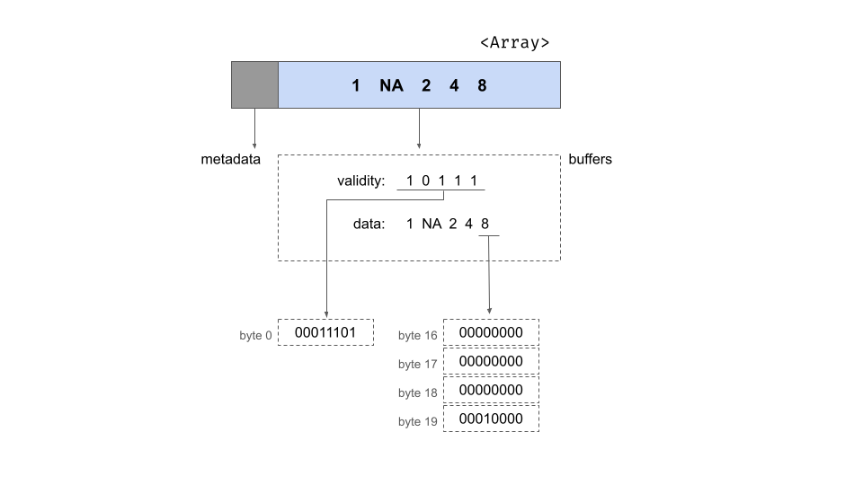

Abstract#
The Apache Arrow ecosystem—comprising Apache Arrow, Arrow Flight, and Arrow Flight SQL—forms a powerful stack for high-performance data processing. Apache Arrow provides a language-agnostic, in-memory columnar format, designed for efficient analytics and zero-copy interoperability. Arrow Flight builds upon this foundation with an RPC framework leveraging gRPC, enabling high-speed data exchange between systems. Arrow Flight SQL extends this by offering a SQL protocol layer, allowing clients to execute SQL queries on remote data sources while using Arrow as the underlying transport format.
This blog explores the architecture, implementation, and performance characteristics of each component, covering memory layout, serialization techniques, RPC mechanisms, and cross-language integration. Through code examples, benchmarks, and visual diagrams, we illustrate how Arrow’s design choices translate into real-world efficiency gains for databases, machine learning pipelines, and distributed analytics workloads.
1. Apache Arrow: In-Memory Columnar Format#
Apache Arrow establishes a standardized, in-memory columnar format optimized for high-performance analytics. Its design promotes efficient CPU utilization, cross-language interoperability, and zero-copy data sharing.
Columnar Memory Layout#
-
Data Organization:
Rather than storing data row-by-row, Arrow arranges data column-by-column. Each column (or Array) is represented by: -
Metadata:
Information such as the array’s length and null count. - Buffers:
Typically, two buffers per column:- A validity bitmap that indicates non-null values.
- A data buffer holding the actual values (e.g., a 32-bit integer array).
For example, consider a nullable 32-bit integer array with 5 elements. Its structure includes:
- A 64-bit length (5) and a null count.
- A validity bitmap (e.g.,
1 0 1 1 1for values[1, NA, 2, 4, 8]). - A corresponding data buffer with values (with
NArepresented appropriately).
This layout is illustrated by the below diagram where metadata (gray) stores length and null count, and two buffers (dotted boxes) hold the bitmap and data. Each value is accessed in O(1) time via pointer offset arithmetic.

- Memory Alignment:
Arrow pads and aligns buffers to 8-byte boundaries (and ideally to 64-byte cache-line boundaries) to enhance sequential scanning and facilitate SIMD (Single Instruction, Multiple Data) processing.
Zero-Copy Sharing and Immutability#
-
Zero-Copy Sharing:
Data in Arrow is stored using relative offsets instead of absolute pointers. This design allows processes to share data without serialization or copying. For instance, an Arrow array created in C++ can be directly shared with Python or Java simply by transferring the underlying memory buffers. -
Immutability:
Once created, Arrow arrays are immutable. This guarantees thread-safety and consistency in concurrent environments. Any modification results in the creation of a new array, thereby avoiding concurrency issues. -
Interoperability:
Arrow’s C Data Interface enables safe handoffs between different programming languages. Whether transferring data between C++ and Python (via PyArrow) or across other language boundaries, the standardized format ensures that the receiving process can interpret the memory correctly. For persistent or remote data exchange, Arrow defines an IPC (Inter-Process Communication) format using FlatBuffers to serialize schema and metadata while transferring raw column buffers as-is.
Language Implementations#
Apache Arrow is language-agnostic with consistent implementations across multiple ecosystems:
-
C++:
Utilizes classes likearrow::Array,arrow::Buffer, andarrow::RecordBatch. Memory is managed via a MemoryPool that ensures proper alignment, with buffers handled through reference counting (usingstd::shared_ptr). -
Rust:
Offered via thearrow-rscrate, which uses an ArrayData structure to encapsulate buffer pointers and metadata. Rust’s implementation uses Arc for buffer management and carefully leverages unsafe code to maintain 64-bit alignment. -
Go:
Employs Go slices ([]byte) to store buffers, adhering to the same layout and alignment rules as defined by the Arrow specification.
The uniformity of the memory layout means that an Arrow file written in one language (e.g., C++) can be memory-mapped and read seamlessly in another (e.g., Rust or Go) without re-parsing the data.
Vectorized Execution and SIMD Optimizations#
-
SIMD-Friendly Design:
The contiguous memory layout of each column allows operations to be vectorized. Arrow’s compute kernels for tasks such as arithmetic operations, filtering, and aggregation are often optimized with SIMD instructions. The Arrow C++ library, for example, uses runtime CPU feature detection to select between AVX2 and SSE4.2 instructions, depending on hardware capabilities. -
Data Locality:
Storing column values adjacently in memory maximizes cache efficiency. This design choice supports highly optimized, pipelined execution on modern CPUs.
Interoperability and IPC#
-
Efficient IPC:
Arrow’s design extends beyond in-memory processing. Its IPC format serializes record batches with a lightweight FlatBuffer header (storing schema and buffer sizes) followed by the raw memory buffers. This approach makes it feasible to write Arrow data to disk or transmit it over a network with minimal overhead. -
Foundation for Arrow Flight:
The same IPC format is later leveraged by Arrow Flight for high-speed, remote data communication, demonstrating Arrow’s role as a foundational layer in the broader Arrow ecosystem.
2. Arrow Flight: High-Performance RPC for Arrow#
Overview and Architecture#
Arrow Flight is an RPC framework designed for high-speed transfer of Arrow data between processes or over the network with minimal overhead. Built on gRPC, it utilizes Arrow’s IPC format as the payload for data streams, avoiding costly serialization.
Instead of converting Arrow data into another format, Flight transmits Arrow record batches directly. The protocol organizes data transfer around FlightData streams, where clients can:
- Download data from a Flight server using
DoGet - Upload data using
DoPut - Stream bidirectionally using
DoExchange
Flight also provides metadata RPCs for discovering datasets and controlling transfers.
Flight Protocol: Dataset Identification and Retrieval#
Datasets in Flight are identified using a FlightDescriptor, which can be:
- A textual path
- An opaque command (e.g., a SQL query or file path)
Clients retrieve data in two steps:
- Call
GetFlightInfowith a descriptor to obtain aFlightInforesponse, which includes: - The schema
- Size estimates
- End-points (for distributed transfers)
-
A Ticket (a handle for retrieving the data)
-
Call
DoGetwith the Ticket, initiating a stream of Arrow record batches.
Additional RPC methods include:
ListFlights– List available datasetsGetSchema– Fetch schema without retrieving dataDoAction/ListActions– Perform custom commands (e.g., cache control)DoExchange– A full-duplex bidirectional stream for advanced use cases
Flight’s use of gRPC streaming allows large datasets to be sent as a sequence of Arrow messages without repeatedly establishing connections.
Distributed and Parallel Data Transfer#
Flight is designed for high throughput and parallelism:
- Distributed clusters can use a planner-coordinator model:
- A coordinator node handles metadata requests.
- Data nodes serve partitions of data.
-
A
GetFlightInforequest to the coordinator returns multiple endpoints for parallel transfer. -
Parallel retrieval:
- The client receives N endpoints in
FlightInfo. - It launches N
DoGetrequests to different servers simultaneously. - This enables horizontal scaling, where data is pulled directly from multiple servers instead of funneling through one.
gRPC and Protocol Buffers#
Arrow Flight extends gRPC with a custom Protobuf-based API. The key message type is FlightData, which contains:
- FlightDescriptor (only set on the first message of a stream)
- Data header (Arrow IPC message header for a record batch)
- Application metadata (optional)
- Data body (raw bytes of the record batch)
Flight optimizes message structure to minimize copying, ensuring zero-copy transfers whenever possible.
Zero-Copy Serialization in Flight#
A major goal of Flight is to avoid overhead in converting Arrow data to Protobuf and back. Implementations achieve zero-copy transfers by:
- Intercepting Arrow buffers and sending them directly over gRPC.
- Bypassing Protobuf serialization, directly writing Arrow data as
grpc::Sliceobjects in C++. - Leveraging Netty’s
ByteBuffor zero-copy transfers in Java.
This design achieves near-hardware-limited throughput, with internal tests showing 2-3 GB/s over TCP on localhost.
Even non-Arrow-aware gRPC clients can receive Flight messages as byte blobs and deserialize them manually, though they won’t benefit from zero-copy optimizations.
Language-Specific Implementations#
Arrow Flight is implemented in multiple languages, typically built on each language’s gRPC library:
- C++:
- Provides
arrow::flight::FlightServerBaseandFlightClient. - Developers subclass
FlightServerBaseand override virtual methods for RPCs (ListFlights,GetFlightInfo,DoGet, etc.). -
Uses Arrow’s memory allocator and zero-copy optimizations.
-
Java:
- Implements
FlightProducer(or extendsNoOpFlightProducer). - Uses
VectorSchemaRootfor Arrow data. FlightServer.builder(...).start()initializes a Flight server.-
Built on gRPC Java and uses Netty’s direct ByteBuffers for efficient transfers.
-
Rust:
- Provided by the
arrow-flightcrate, built on Tonic (Rust’s gRPC library). - Uses async methods for client-server interactions.
-
Experimental Flight SQL support (opt-in via feature flags).
-
Go:
- Part of the Apache Arrow Go module.
- Implements
FlightServiceServerwith gRPC. -
Uses
[]byteslices for Arrow buffers. -
Python:
- Python’s Flight implementation is a binding to the C++ library (
pyarrow.flight).
Memory Handling & Serialization#
Arrow Flight is optimized for direct Arrow data transport:
- Uses the Arrow IPC format as the payload, avoiding serialization overhead.
- Treats
FlightData.data_bodyas a sidecar for efficient transmission. - C++ uses
grpc::WriteOptions::setNoCopy(), and Java utilizes Netty’s reference-counted buffers. - Supports optional compression of Arrow buffers.
Throughput benchmarks show that Flight approaches raw socket I/O speeds, making it one of the fastest RPC solutions for data analytics.
Use Cases#
Arrow Flight is ideal for low-latency, large-scale data movement. Common use cases include:
- Distributed Query Engines
- Replaces ODBC/JDBC for fast result set transfers.
-
Example: Dremio’s use of Flight yields 20-50x higher throughput than ODBC.
-
Data Services & APIs
- A Flight server in front of Parquet datasets or databases.
-
Enables clients to query data in Arrow format natively.
-
Streaming Data Pipelines
- A producer service streams Arrow record batches to consumers.
-
Enables real-time ingestion into AI/ML pipelines.
-
Data Lake Access
- Direct, high-speed retrieval of Arrow tables from a remote storage system.
-
Maximizes network bandwidth utilization.
-
Secure Data Transfer
- Built-in TLS encryption (using
grpc+tls://URIs). - Authentication via token-based mechanisms.
- OpenTelemetry support for tracing Flight calls.
3. Arrow Flight SQL: SQL over Arrow Flight#
Overview of Flight SQL#
Arrow Flight SQL is a protocol introduced in Arrow 7.0.0 that extends Arrow Flight for database connectivity. While traditional JDBC drivers transmit query results row-by-row, requiring serialization and deserialization at both ends, Flight SQL sends data in Arrow’s native format using gRPC streaming, eliminating conversion overhead and enabling parallel retrieval.
Flight SQL is the transport layer, defining how SQL queries and results move between clients and databases over Arrow Flight. ADBC (Arrow Database Connectivity) sits on top of Flight SQL, providing a developer-friendly API for interacting with multiple databases without needing to implement raw Flight SQL calls. This layered architecture enables database vendors to focus on implementing the Flight SQL protocol while application developers can work with the simpler ADBC interface.
The protocol enables clients to:
- Execute SQL queries
- Prepare statements
- Retrieve database metadata (e.g., tables, schemas, catalogs)
Flight SQL defines a standardized set of RPC calls and message types for SQL operations, leveraging Arrow Flight’s high-performance transport. The goal is to provide an Arrow-native alternative to ODBC/JDBC, eliminating row-to-column conversion overhead.
With Flight SQL, clients can communicate with any database or query engine that implements the Flight SQL API and receive results as Arrow tables, which can be directly used in pandas, Spark, DataFrame libraries, etc., without copy.
A Flight SQL server acts as a thin wrapper around a database engine: it receives SQL queries, executes them, and streams results back as Arrow data.
Flight SQL Protocol and Commands#
Flight SQL builds on Flight RPCs, utilizing FlightDescriptor commands and Action messages to represent SQL requests. The protocol defines specific Protobuf message types for various operations and supports token-based authentication and TLS encryption, ensuring secure database connectivity in distributed environments.
Metadata Queries (Database Catalog Info)#
CommandGetTables– List tablesCommandGetSchemas– Retrieve schemasCommandGetCatalogs– Retrieve database catalogsCommandGetSqlInfo– Fetch DB capabilitiesCommandGetPrimaryKeys/CommandGetExportedKeys– Retrieve key relationships
Query Execution#
CommandStatementQuery– Execute a SQL SELECT query.CommandStatementUpdate– Execute an INSERT/UPDATE/DELETE query, returning affected row count.
Prepared Statements#
ActionCreatePreparedStatementRequest– Client requests query preparation.CommandPreparedStatementQuery/CommandPreparedStatementUpdate– Execute a prepared statement.DoPut– Used for parameter binding by streaming Arrow batches.ActionClosePreparedStatementRequest– Clean up prepared statements.
Query Execution Flow in Flight SQL#
A typical SQL query execution follows this sequence:
- Client sends
GetFlightInfowith aFlightDescriptorcontaining aCommandStatementQuery(SQL string). - Server responds with
FlightInfo, including: - Schema of the result set.
- Ticket representing the execution result.
- Optional multiple endpoints (for distributed retrieval).
- Client calls
DoGetwith the Ticket. - Server streams Arrow record batches (
FlightData) to the client.
This flow is analogous to JDBC returning a ResultSet, but entirely in Arrow format, avoiding row-based transformations.
Metadata queries (e.g., listing tables) follow the same GetFlightInfo → DoGet pattern.
Prepared Statement Flow#
Prepared statements introduce multiple RPC interactions:
- Client calls
DoActionwithActionCreatePreparedStatementRequest(containing the SQL query). - Server responds with a handle (identifier for the prepared statement).
- Client binds parameters via
DoPut, sending Arrow batches. - Server executes the prepared statement for each batch.
- Client calls
DoActionwithActionClosePreparedStatementRequestto clean up.
Despite its complexity, this system optimizes parameterized queries, particularly for batch inserts and updates.
Integration with Database Engines#
A Flight SQL server must translate Flight SQL calls into actual database operations. Implementations typically subclass a Flight SQL Producer interface.
C++ Implementation#
FlightSqlServerBase: A base class for Flight SQL servers.- Provides overridable methods (
ExecuteSqlQuery,GetTables, etc.). - Handles Flight RPC dispatching automatically.
Developers only need to implement SQL execution, while Flight SQL manages metadata retrieval, query planning, and data streaming.
Java Implementation#
FlightSqlProducer: Java equivalent ofFlightSqlServerBase.- Can wrap an existing JDBC source or provide a native integration.
- Uses Arrow’s off-heap memory model for efficient transfers.
Rust & Go Implementations#
- Rust (
arrow-flightcrate): Flight SQL is experimental but provides SQL message definitions. - Go: Uses
FlightServiceServer, integrating with Go’s gRPC framework.
Example Use Cases#
- DuckDB: Since DuckDB natively supports Arrow, a Flight SQL server can:
- Receive SQL queries.
- Execute them within DuckDB’s in-process engine.
- Stream results directly as Arrow tables without conversion.
- DataFusion (Rust Query Engine): Flight SQL turns DataFusion into a high-speed SQL service.
- Dremio & InfluxDB: Use Flight SQL to serve Arrow-based queries faster than ODBC/JDBC.
Even traditional databases like PostgreSQL and MySQL benefit: an adapter can fetch rows, convert them to Arrow, and serve via Flight SQL, avoiding binary/text-based row protocols.
Client-Side Usage#
Flight SQL is accessible across multiple languages, with high-level APIs:
- C++:
FlightSqlClientsimplifies Flight SQL interactions. - Java: Provides
FlightSqlClientfor executing queries and fetching results. - Python:
pyarrow.flight.FlightSqlClientallows Python users to run:
client = flight.FlightSqlClient("grpc://localhost:50051")
result = client.execute("SELECT * FROM my_table")
- Returns Arrow tables directly usable in pandas, NumPy, Spark.
- ADBC (Arrow Database Connectivity): A higher-level abstraction built on Flight SQL.
Performance Benefits of Flight SQL#
Flight SQL’s columnar nature eliminates the row-based inefficiencies of ODBC/JDBC:
-Avoids row-to-column conversion (which can consume 60-90% of JDBC data transfer time).
-Supports partitioned result sets, enabling parallel query retrieval.
-Optimized for Arrow-native databases (e.g., DuckDB, DataFusion).
-Maintains transactional integrity (via BeginTransaction / CommitTransaction calls).
-Extensible: New metadata or commands can be added backwards-compatibly.
The Future of Data Movement#
The Apache Arrow ecosystem represents a fundamental shift in how we think about data movement and processing in modern computing. By providing a standardized columnar memory format (Arrow), an efficient RPC framework (Flight), and a SQL interface layer (Flight SQL), it addresses the entire stack of data processing needs:
- At the Memory Level: Arrow’s zero-copy sharing and SIMD optimization enable unprecedented performance for analytical workloads.
- At the Network Level: Flight’s streaming protocol and zero-serialization design approach hardware limits for data transfer speeds.
- At the Application Level: Flight SQL makes these benefits accessible through familiar SQL interfaces while maintaining Arrow’s performance advantages.
As data volumes continue to grow and real-time analytics become increasingly critical, the Arrow ecosystem’s importance will only increase. Its adoption by major databases, analytics engines, and data processing frameworks suggests it’s becoming the de facto standard for high-performance data exchange.
The future points toward a world where data moves seamlessly between systems, languages, and frameworks, with Arrow as the common foundation. Whether you’re building a distributed database, a machine learning pipeline, or a real-time analytics system, the Arrow ecosystem provides the tools needed to handle data at scale with exceptional efficiency.
For developers and organizations looking to stay ahead in the data processing landscape, understanding and adopting the Arrow ecosystem isn’t just an optimization—it’s becoming a necessity.